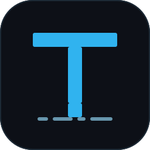

Connect your bot
Configure the owner chat and run the listener locally. It accepts only authorized updates.

TeleCodeTELEGRAM TO LOCAL SESSIONS
Choose an OpenCode session, message it from Telegram, and receive replies through local MCP tools.
Python 3.11+ Standard library MIT license
01 / THE LOOP
Configure the owner chat and run the listener locally. It accepts only authorized updates.
Pick a named OpenCode session. Incoming messages go to that active target.
Send requests in Telegram. The agent can reply through MCP and return allowlisted files.
02 / CAPABILITIES
Browse sessions by title, navigate pages, and switch the active target explicitly.
Browse providers and models in Telegram, then update the active OpenCode session.
Route incoming attachments to their captured session and restrict outbound files to approved roots.
Local coding-agent clients can use bridge tools to send text, files, and session status.
Chat identity is checked before routing; sender identity is checked when Telegram provides it.
No public webhook or hosted broker. Optional systemd user service starts the listener.
03 / TELEGRAM INTERFACE
Pick a session, inspect the active target, or change its model without switching to a browser dashboard.
CHOOSE A MODEL PROVIDER
04 / INTEGRATIONS
OpenCode has targeted Telegram-to-session routing. Other listed clients can use outbound MCP tools where their configuration supports them.
| Client | Outbound MCP tools | Targeted inbound routing |
|---|---|---|
| OpenCode | Supported | Supported |
| Claude Code | Supported | Not implemented |
| Cursor | Supported | Not implemented |
| Gemini CLI | Supported | Not implemented |
| Cline / Roo Code | Supported | Not implemented |
| Continue / Aider | Manual MCP configuration | Not implemented |
| Amazon Q / Codex CLI | Supported | Not implemented |
05 / COMMANDS
/sessionBrowse and select the active session./currentShow the active session name and ID./modelsBrowse providers and switch the session model./filesList received files for the active session./helpRestore the keyboard and list commands.07 / GET STARTED
Install from the source repository, then let the guided setup connect your bot and coding-agent CLI.
There is no standalone binary download. The installer copies the reviewed project files to your user directories.
Read the detailed installation guide ↗
The installer checks your environment, backs up CLI config before changing it, and keeps private bot settings in your user config directory.
git clone https://github.com/Aetherdz/telecode.gitcd telecode && ./install.shEnter your numeric ID from @Getmyid_bot, or choose automatic detection and send /start to your own bot.
Restart the selected coding-agent CLI to load MCP, then send /start in Telegram. Check the service with telecode status.
telecode status